| 16-17 Mai 2009 - La CC 6570 joue au croquet L'APCC 6570, association qui préserve la CC 6570 en Avignon, a réussi à créer l'évènement ferroviaire du printemps 2009. Convaincre la SNCF de laisser monter une CC 6500 jusqu'à St Chély d'Apcher par la ligne des Causses. Cette ligne qui traverse le massif central fut très tôt électrifiée par la Compagnie du Midi en raison de son profil très difficile. Aujourd'hui, la ligne n'assure plus qu'un trafic régional et l'infrastructure est très fragile, tant au niveau de la voie (rails à double champignon, entretien minimaliste) que de la caténaire "dans son jus" d'avant guerre et des sous-stations dont de nombreuses hors-service. Faire gravir une CC de 118 tonnes très gourmande en courant à la moindre mise en vitesse sous les ogives du Midi était un évènement osé, inédit et qui restera probablement unique. Cerise sur le gâteau, la météo était au beau fixe. |
| page 1 sur 2 |
| 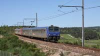 | ||
| 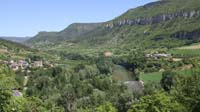 | 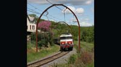 | |
| 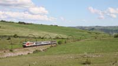 | 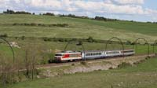 | |
| 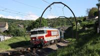 | ||
| 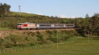 | 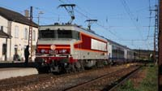 | |
| 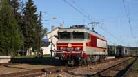 | ||
| 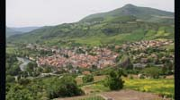 | 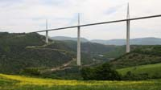 | 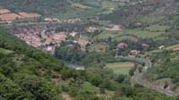 |